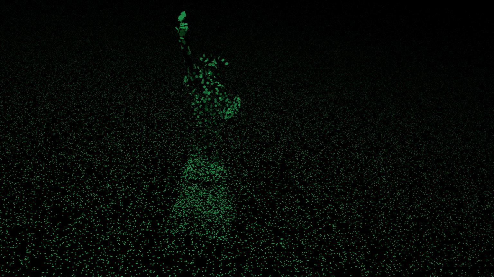

Stolen Liberty - Aith
Millions upon millions of people work without pay. A large subset of this group are women whose work ties them to their household- those colloquially known designated as 'housewives.'
Housewives perform many duties. Among the immediate ones, like cooking and cleaning, lies the more insidious ones, like emotionally supporting their husbands, sexually supporting their husbands, and every that comes in between: having to play dress-up, having to force smiles in unhappy moments, having to always "be there" for their husband. This expectation of women has led them to become mental and physical punching bags for husbands frustrated from their lives at work. Where are the punching bags for women?
Wages for Housework is a feminist movement that aims to halt the subjugation of housewives by limiting what the housewives do best: free housework. They demand the allotment of salary to housewives because, under a capitalistic society, therein lies the notion of a 'social contract,' that "if I work for you, you pay me." It is important to know that the movement doesn't desire payment for its extrinsic value within trade, but rather for its value in recognizing action as real work. This recognition of labor would springboard new possibilities within feminism as a whole.
The monetary value of unpaid care work is estimated to be nearly $11 trillion a year. In this art piece, I wanted to represent 11 trillion dots within an image... but that is immensely unrealistic, considering how a standard 1280x1080 digital screen has only 1,382,400 pixels. Instead I simply rendered enough dots to feel overwhelming to the viewer. I also included the Statue of Liberty because its symbolism through its broken shackle, its name, and idea that it is a woman, ironically goes against the zombifying reality that housewives face daily. However, this choice of symbol leads to a very America-centric viewpoint of the housewife struggle, which is something didn't realize as I was making this piece.
Citations
Federici, Silvia. Revolution at Point Zero: Housework, Reproduction, and Feminist Struggle. PM Press, 1975.
Cox, Nicole, and Silvia Federici. Counter-Planning from the Kitchen: Wages for Housework: a Perspective on Capital and the Left. New York Wages for Housework Committee, 1976.
Wezerek, Gus, and Kristen R. Ghodsee. “Women's Unpaid Labor Is Worth $10,900,000,000,000.” The New York Times, The New York Times, 5 Mar. 2020, www.nytimes.com/interactive/2020/03/04/opinion/women-unpaid-labor.html.
Tortorici, Dayna. “More Smiles? More Money.” n+1, 2013, Fall. nplusonemag.com/issue-17/reviews/more-smiles-more-money/.